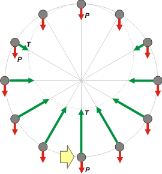

NO ME SALEN
PROBLEMAS RESUELTOS DE FÍSICA DEL CBC
(Leyes de Newton, movimiento circular)
|
|

|
| |
| FIS 53 (d3.06) - Una bola de 1 kg de masa, atada a una cuerda de 0,45 m de longitud, gira describiendo una
circunferencia en un plano vertical. ¿En qué punto de la trayectoria la velocidad es máxima? ¿Cuál
es el máximo valor que puede adquirir dicha velocidad si la cuerda puede soportar una tensión de
hasta 30 N? |
|
Bueno, este ejercicio nos pone en la situación opuesta del ejercicio anterior. La tensión máxima la soporta la cuerda en la posición inferior de la trayectoria circular. El valor máximo que puede soportar la cuerda vale 30 N. |
|
|
En ese instante la tensión de la cuerda apunta hacia el centro de la circunferencia (la pondré positiva) y la fuerza peso hacia afuera (negativa)
T − P = m aC
T − P = m . v² / R
De ahí despejamos la velocidad (ya estamos en la situación límite):
v² = (T − P ) R / m
v² = (30 N − 10 N ) R / m
v² = 20 N . 0,45 m /1 kg |
 |
|
| el esquema no tiene una escala perfecta: cuando la tensión es nula en la posición superior, es 6 veces más grande que el peso en la posición inferior |
|
|
|
Está claro que no se trata de una velocidad constante. No se trata de un movimiento circular uniforme, la velocidad es mayor abajo que arriba. pero se trata de un análisis hecho en el instante en que la bola pasa por la posición inferior.
NOTA: los datos de este ejercicio son inconsistentes: si la fuerza máxima que puede hacer la cuerda es de 30 N, entonces no puede realizar un giro completo, no llegaría a la posición superior. En breve cambiaremos los datos del enunciado para hacerlo consistente. |
|
| DESAFIO: ¿Podría tratarse de un MCU? |
 |
| |
| |
| Algunos derechos reservados.
Se permite su reproducción citando la fuente. Última actualización abr-16. Buenos Aires, Argentina. |
|
|
|